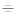

处理绘图项
这里介绍对已添加到绘图中的绘图项所执行的操作。有关其他操作的更多信息，请参见下文。
- 显示/隐藏
- 在 i 绘图项（Plot Items） 控件组中，单击项名称旁的
 可切换该项的显示/隐藏。
可切换该项的显示/隐藏。 - 删除
- 在绘图项列表中选择该项，然后按
 按钮，或右键单击并选择 。
按钮，或右键单击并选择 。 - 重新排序
- 单击项名称右侧的

按钮，并将其向上或向下移动到所需位置。 - 剪切
- 在列表中选择该项，然后右键单击并选择 。此操作会将剪切的对象放入剪贴板，以便粘贴到其他位置（见下方注释）。
- 复制
- 在列表中选择该项，然后按 ，或右键单击并选择 。
- 粘贴
- 先按上述方式执行 复制。然后按 ，或右键单击并选择 。如果使用右键单击，请尽可能在“图例”绘图项下方单击；不允许粘贴到另一个已列出的绘图项上。
- 设置属性
- 在列表中选择该绘图项。然后在列表下方的“属性”部分编辑感兴趣的属性，或右键单击并选择 。使用前一种方式时，每次属性更改都会触发绘图重新渲染。在后一种情况下，对话框可以接受多处更改，且在按下 或 之前不会重新渲染。在渲染时间较长的情况下，后一种方式可能更可取。
注意
绘图项可以在绘图之间剪切、复制和粘贴。因此，剪切是一种将绘图项从一个绘图移动到另一个绘图的机制。
复杂绘图项控件
几乎所有绘图项都会有一个关联的 切割工具（cutplane）、裁剪框（clipbox） 和 范围（range）。这些均通过 i 绘图项（Plot Items） 控件组操作。这些控件能够对绘图项进行切割以“看入”其内部，或将该项过滤为其组成部分的一个子集（例如某个网格单元绘图项中的一定范围的网格单元，而不是所有网格单元）。
其中每一项的用法详情在 i 绘图项（Plot Items） 控件组的主题中提供。
| 这些内容对您有帮助吗？… 版权与免责声明 |
FLAC3D © 2019, Itasca | 原文更新于 2020 年 10 月 8 日 |